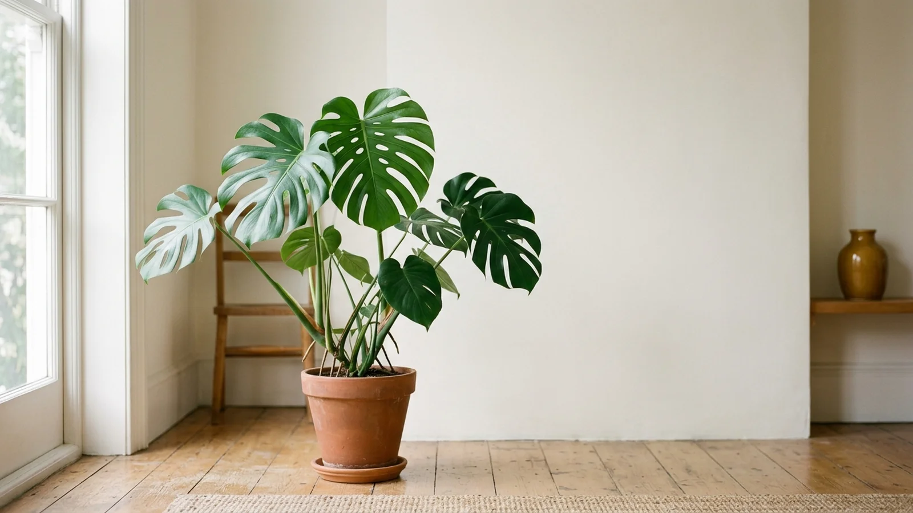
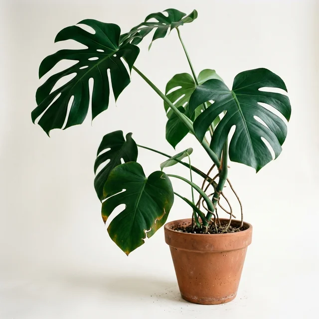

Your monstera has 4,182 followers and one open complaint.
Frond gives every houseplant a verified account, a permanent public care ledger, and an audience that can see precisely how long you waited. Caretakers are listed by full name.

Since March
Ficus cohort
This quarter
All time
The account belongs to the plant.
Every plant gets its own handle, its own followers, and a weekly specimen photograph you are required to take. You hold the camera and you hold the login. You do not write the captions, because the account is not yours.
Append-only, and public from the first entry.
Waterings, rotations, repots, and lapses post to the grid at the moment they happen, or at the moment they were scheduled to happen. Backdating is available on request and has never once been granted.
A single number between 0 and 100, describing you.
It appears on your profile, on each of your plants' profiles, and in cohort search results. Ficus caretakers average 61. Nobody has asked us to explain the weighting, and we would not.

Caretakers on the record.
“I found out about the aphids from the grid. I was in the room at the time.”
“My sponsor score went from 44 to 71 in a season and my ex-husband still follows the pothos.”
“We contested a skipped watering and we lost. The record stands. I have made my peace with the record.”
Single specimen
One plant. One grid. No analytics and no appeals.
- 1 verified plant account
- Public care ledger, hourly sync
- Sponsor score, recalculated whether or not you look at it
Household
Forty plants and at least one contested ranking.
- 40 verified accounts
- Cohort Explore placement by species and USDA zone
- Ledger dispute filing, resolved within 48 hours, against you
- Shared custody for one additional adult in the residence
Estate
For collections that have outgrown the person maintaining them.
- Unlimited accounts across unlimited rooms
- A named account manager who will call you about the ficus
- Priority arbitration on disputed waterings
- Quarterly leaf audit, conducted in person, unannounced